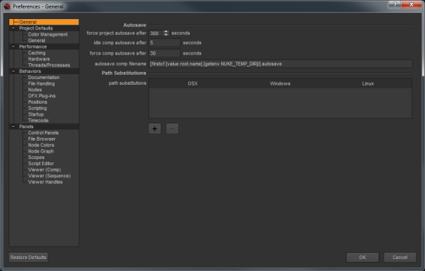

打开 偏好 按对话框 转变 S 。可用的首选项取决于哪种模式 Nuke 在中启动。

下面描述了每个偏好的功能 附录 A: 偏好 .
当您更改首选项时，在大多数情况下，接口会立即注册更改 (例如，接口元素以新颜色显示)。一些偏好的变化，如 性能 > 硬件 > 默认闪烁设备 ,要求您重新启动 Nuke Studio，以便更改生效。
Nuke 将首选项设置存储在名为 偏好 10.5 。Nk ,它驻留在你的 。 Nuke 目录。此位置取决于您的操作系统。
• Linux:/home/登录名/。nuke
• Mac OS X:/Users/登录名/。nuke
• Windows: 驱动器号: \ Users \ 登录名 \.nuke
注意: 在窗户上, 。 Nuke 位于 HOME 环境变量指向的目录中。如果没有设置这个变量 (这是常见的), 。 Nuke 目录位于 USERPROFILE 环境变量指定的文件夹下。
每个 Nuke 用户可以维护自己独特的设置。在更改后 偏好 对话框，您可以简单地单击 好 保存并关闭您的首选项。如果你点击 取消 ,您所做的任何更改都不会保存。
在内部进行所需的更改 偏好 对话框，然后单击 好 . Nuke 将新设置写入 偏好 10.5 。Nk 文件，您可以在中找到。Nuke 目录:
• 在窗户上 : 的。Nuke 目录可以在 HOME 环境变量指向的目录下找到。如果未设置此变量 (这是常见的)，则为。Nuke 目录在 USERPROFILE 环境变量指定的文件夹下 -- 通常是这种形式 驱动器号 : \ 文档和设置 \ 登录名 \ (Windows XP) 或 驱动器号 : \ 用户 \ 登录名 \ (Windows Vista)。
要确定是否设置了 HOME 和 USERPROFILE 环境变量以及它们指向的位置，请在 Windows 资源管理器的地址栏中输入 % HOME % 或 % USERPROFILE %。如果设置了环境变量，它指向的文件夹将被打开。如果没有设置，你会得到一个错误。
• 在 Mac OS X 上 :/用户/ 登录名 /。 Nuke
• 在 Linux 上 :/用户/ 登录名 /。 Nuke
您的新偏好对于当前和所有后续会话仍然有效。
要重置您所做的任何更改，只需单击 恢复默认值 在左下方 偏好 对话框。您可以重新设置的选择，默认情况下，删去了 偏好 10.5 。Nk 文件。这样做后，下次你启动 Nuke ,它使用默认首选项重建文件。
|
|